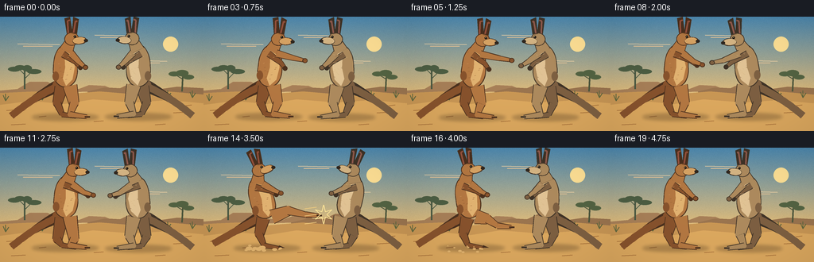
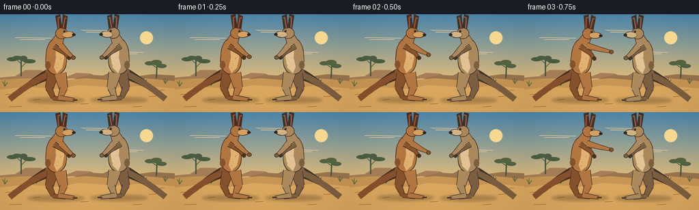

CODING AGENTS AS PIXEL WORLD MODELS
traex/GPT-5.6-Sol · instance_preservation_0009
点击播放 · 原生 RGB 像素
逐轮保存的候选
回放视频、检查图与代码变化。
每份候选均可单独播放。实际图片检查记录在下方工具轨迹中。
候选 01播放与检查图
点击播放 · 原生 RGB 像素


展开代码变化
--- 上一保存版本
+++ 本次保存版本
@@ -0,0 +1,254 @@
+from pathlib import Path
+import math
+import numpy as np
+from PIL import Image, ImageDraw, ImageFilter
+import artifact_io
+
+W,H,N,S = 256,144,20,4
+ROOT=Path(__file__).resolve().parent
+
+def scpts(points): return [(int(round(x*S)),int(round(y*S))) for x,y in points]
+def lerp(a,b,t): return a+(b-a)*t
+def smoothstep(a,b,x):
+ q=max(0,min(1,(x-a)/(b-a)))
+ return q*q*(3-2*q)
+def gauss(x,c,w): return math.exp(-((x-c)/w)**2)
+def rot_pt(p, origin, ang):
+ x,y=p; ox,oy=origin; a=math.radians(ang); ca,sa=math.cos(a),math.sin(a)
+ dx,dy=x-ox,y-oy
+ return ox+dx*ca-dy*sa, oy+dx*sa+dy*ca
+
+def ellipse_poly(cx,cy,rx,ry,ang=0,n=40):
+ a=math.radians(ang); ca,sa=math.cos(a),math.sin(a)
+ return [(cx+rx*math.cos(q)*ca-ry*math.sin(q)*sa,
+ cy+rx*math.cos(q)*sa+ry*math.sin(q)*ca) for q in np.linspace(0,2*math.pi,n,endpoint=False)]
+
+def bezier(p0,p1,p2,t):
+ u=1-t
+ return (u*u*p0[0]+2*u*t*p1[0]+t*t*p2[0],u*u*p0[1]+2*u*t*p1[1]+t*t*p2[1])
+
+def tapered_curve(draw,p0,p1,p2,w0,w1,fill,outline=None):
+ ts=np.linspace(0,1,30); centers=[bezier(p0,p1,p2,float(t)) for t in ts]
+ left=[]; right=[]
+ for i,(x,y) in enumerate(centers):
+ if i==0: dx,dy=centers[1][0]-x,centers[1][1]-y
+ elif i==len(centers)-1: dx,dy=x-centers[i-1][0],y-centers[i-1][1]
+ else: dx,dy=centers[i+1][0]-centers[i-1][0],centers[i+1][1]-centers[i-1][1]
+ L=math.hypot(dx,dy) or 1; nx,ny=-dy/L,dx/L; w=lerp(w0,w1,float(ts[i]))
+ left.append((x+nx*w,y+ny*w)); right.append((x-nx*w,y-ny*w))
+ poly=left+right[::-1]
+ if outline: draw.polygon(scpts(poly),fill=outline)
+ if outline:
+ # inset is not worth geometric complexity: draw slightly narrower center line over silhouette
+ draw.line(scpts(centers), fill=fill, width=max(1,int((w0+w1)*S)), joint='curve')
+ draw.ellipse(scpts([(p0[0]-w0,p0[1]-w0),(p0[0]+w0,p0[1]+w0)]),fill=fill)
+ else: draw.polygon(scpts(poly),fill=fill)
+
+def capsule(draw,p0,p1,w0,w1,fill,outline):
+ x0,y0=p0; x1,y1=p1; dx,dy=x1-x0,y1-y0; L=math.hypot(dx,dy) or 1
+ nx,ny=-dy/L,dx/L
+ poly=[(x0+nx*w0,y0+ny*w0),(x1+nx*w1,y1+ny*w1),(x1-nx*w1,y1-ny*w1),(x0-nx*w0,y0-ny*w0)]
+ draw.polygon(scpts(poly),fill=outline)
+ # inner slightly reduced polygon
+ a0=max(.3,w0-.8); a1=max(.3,w1-.8)
+ poly2=[(x0+nx*a0,y0+ny*a0),(x1+nx*a1,y1+ny*a1),(x1-nx*a1,y1-ny*a1),(x0-nx*a0,y0-ny*a0)]
+ draw.polygon(scpts(poly2),fill=fill)
+ r=max(1,w1-.8); draw.ellipse(scpts([(x1-r,y1-r),(x1+r,y1+r)]),fill=fill)
+
+def background(frame):
+ # warm dawn sky, lightly moving camera haze
+ yy=np.arange(H)[:,None]
+ top=np.array([77,137,176.]); horizon=np.array([242,194,116.])
+ q=np.clip(yy/108,0,1)[...,None]
+ arr=top[None,None,:]*(1-q)+horizon[None,None,:]*q
+ arr=np.repeat(arr,W,axis=1)
+ # subtle fixed grain
+ rng=np.random.default_rng(100)
+ arr+=rng.normal(0,1.1,(H,W,1))
+ arr=np.clip(arr,0,255).astype(np.uint8)
+ im=Image.fromarray(arr,'RGB').resize((W*S,H*S),Image.Resampling.BICUBIC)
+ d=ImageDraw.Draw(im)
+ # sun and cloud wisps
+ d.ellipse(scpts([(205,25),(224,44)]),fill=(255,224,149))
+ for i,(x,y,ww) in enumerate([(22,34,53),(119,23,48),(173,55,37)]):
+ d.line(scpts([(x,y),(x+ww,y+1)]),fill=(235,207,164),width=S)
+ d.line(scpts([(x+7,y+3),(x+ww-9,y+3)]),fill=(225,193,151),width=S)
+ # distant mesas
+ d.polygon(scpts([(0,93),(22,91),(37,82),(60,82),(70,88),(99,91),(112,86),(132,87),(146,93),(0,98)]),fill=(168,128,88))
+ d.polygon(scpts([(110,94),(132,89),(151,90),(166,83),(190,84),(202,91),(223,88),(256,90),(256,102),(110,101)]),fill=(155,117,79))
+ # scrub silhouettes and sparse trees
+ d.line(scpts([(31,91),(31,68)]), fill=(72,87,65),width=2*S)
+ d.line(scpts([(31,73),(24,66),(18,66)]), fill=(72,87,65),width=S)
+ d.line(scpts([(31,78),(39,70),(45,71)]), fill=(72,87,65),width=S)
+ for cx,cy,rx,ry in [(18,66,8,3),(25,64,7,3),(43,69,9,3),(34,65,6,4)]: d.ellipse(scpts([(cx-rx,cy-ry),(cx+rx,cy+ry)]),fill=(77,94,67))
+ d.line(scpts([(229,94),(230,74)]), fill=(78,88,61),width=2*S)
+ d.line(scpts([(230,79),(222,74)]), fill=(78,88,61),width=S)
+ for cx,cy,rx,ry in [(219,72,7,3),(229,71,8,4),(237,76,7,3)]: d.ellipse(scpts([(cx-rx,cy-ry),(cx+rx,cy+ry)]),fill=(84,100,67))
+ # terrain layers
+ d.polygon(scpts([(0,96),(44,94),(78,98),(125,94),(174,98),(211,94),(256,98),(256,144),(0,144)]),fill=(201,151,85))
+ d.polygon(scpts([(0,111),(39,106),(80,110),(117,104),(167,108),(211,105),(256,109),(256,144),(0,144)]),fill=(221,169,95))
+ # ground strokes / scrub
+ for x,y,l in [(8,118,13),(49,126,9),(218,121,16),(233,112,8),(14,136,18),(118,132,12),(195,136,13),(70,117,7)]:
+ d.line(scpts([(x,y),(x+l,y-1)]),fill=(166,111,57),width=S)
+ for x,y in [(7,106),(242,102),(53,105),(211,102)]:
+ d.line(scpts([(x,y),(x-3,y-7)]),fill=(97,104,63),width=S)
+ d.line(scpts([(x,y),(x+4,y-6)]),fill=(97,104,63),width=S)
+ d.line(scpts([(x,y),(x,y-9)]),fill=(97,104,63),width=S)
+ return im
+
+def map_local(cx,ground,face,p): return (cx+face*p[0],ground+p[1])
+
+def draw_roo(im,cx,ground,face,pose,pal,seed):
+ d=ImageDraw.Draw(im)
+ outline=pal['outline']; fur=pal['fur']; dark=pal['dark']; light=pal['light']; belly=pal['belly']
+ lean=pose['lean']; bounce=pose['bounce']; ground+=bounce
+ def M(p): return map_local(cx,ground,face,p)
+ def U(p): return M(rot_pt(p,(0,-40),lean))
+ # broad contact shadow
+ sh=Image.new('RGBA',im.size,(0,0,0,0)); sd=ImageDraw.Draw(sh)
+ sd.ellipse(scpts([(cx-42,ground-4),(cx+42,ground+5)]),fill=(74,52,31,78))
+ sh=sh.filter(ImageFilter.GaussianBlur(2*S)); im.paste(sh,(0,0),sh); d=ImageDraw.Draw(im)
+ # tail behind body, bends with counterbalance
+ kick=pose['kick']; tail_y=-1-4*kick
+ p0=M((-8,-39)); p1=M((-38,-26+4*kick)); p2=M((-68,tail_y))
+ tapered_curve(d,p0,p1,p2,8.2,1.0,dark,outline)
+ # far leg: massive thigh, slim hock, long foot
+ fh=M((-5,-37)); fk=M((-10,-17+2*pose['crouch'])); fa=M((-4,-3)); ff=M((14,0))
+ capsule(d,fh,fk,8.5,6.3,dark,outline); capsule(d,fk,fa,5.2,3.4,dark,outline); capsule(d,fa,ff,3.6,2.4,dark,outline)
+ # rear toes
+ d.polygon(scpts([ff,M((22,0)),M((15,-3))]),fill=outline)
+ # torso as a tapered pear, transformed by lean
+ body_local=[]
+ for q in np.linspace(0,2*math.pi,46,endpoint=False):
+ # larger rump than shoulders
+ yy=-64+27*math.sin(q); rel=(yy+64)/27
+ rx=15.2 + 3.8*max(0,rel)
+ body_local.append(rot_pt((rx*math.cos(q),yy),(0,-40),lean))
+ d.polygon(scpts([M(p) for p in body_local]),fill=outline)
+ inner=[]
+ for q in np.linspace(0,2*math.pi,46,endpoint=False):
+ yy=-64+26*math.sin(q); rel=(yy+64)/26; rx=14.3+3.4*max(0,rel)
+ inner.append(rot_pt((rx*math.cos(q),yy),(0,-40),lean))
+ d.polygon(scpts([M(p) for p in inner]),fill=fur)
+ # belly panel
+ bel=[(-1,-83),(8,-78),(12,-63),(9,-47),(1,-39),(-3,-48),(0,-62)]
+ d.polygon(scpts([U(p) for p in bel]),fill=belly)
+ # shoulder/rump modeling
+ d.ellipse(scpts([(U((-12,-51))[0]-4,U((-12,-51))[1]-6),(U((-12,-51))[0]+4,U((-12,-51))[1]+6)]),fill=dark)
+ # near leg supports or kicks
+ nh=M((6,-39))
+ if kick>0.03:
+ # arcs to a characteristic two-segment forward kick
+ nk=M((lerp(10,27,kick),lerp(-17,-47,kick)))
+ na=M((lerp(5,49,kick),lerp(-3,-42,kick)))
+ nf=M((lerp(25,65,kick),lerp(0,-41,kick)))
+ else:
+ nk=M((11,-17+2*pose['crouch'])); na=M((6,-3)); nf=M((27,0))
+ capsule(d,nh,nk,9.3,6.7,fur,outline); capsule(d,nk,na,5.7,3.7,fur,outline); capsule(d,na,nf,4.1,2.7,fur,outline)
+ # blackish toe tips
+ dx=2.5*face
+ d.line(scpts([(nf[0]-dx,nf[1]),(nf[0]+4*face,nf[1])]),fill=outline,width=2*S)
+ # neck
+ neck0=U((1,-83)); neck1=U((6,-94))
+ capsule(d,neck0,neck1,9,6.8,fur,outline)
+ # ears (behind head), rotate with upper body
+ for pts in [[(3,-98),(-1,-124),(6,-126),(10,-100)],[(8,-99),(10,-126),(17,-123),(14,-98)]]:
+ world=[U(p) for p in pts]; d.polygon(scpts(world),fill=outline)
+ cen=[U((lerp(p[0],(5 if i==0 else 13),.12),p[1]+1)) for p in pts] if False else world
+ # small inner ear stroke
+ d.line(scpts([U((4,-102)),U((3,-121)),U((6,-122))]),fill=pal['ear'],width=2*S)
+ d.line(scpts([U((10,-102)),U((13,-121)),U((15,-120))]),fill=pal['ear'],width=2*S)
+ # head and muzzle
+ head=U((8,-98)); hp=ellipse_poly(head[0],head[1],9.2,8.3,lean*face)
+ d.polygon(scpts(hp),fill=outline)
+ hp2=ellipse_poly(head[0],head[1],8.3,7.5,lean*face)
+ d.polygon(scpts(hp2),fill=fur)
+ muzzle=U((18,-96)); mp=ellipse_poly(muzzle[0],muzzle[1],9,4.8,(-5+lean)*face)
+ d.polygon(scpts(mp),fill=outline)
+ mp2=ellipse_poly(muzzle[0]-face*.5,muzzle[1]-.2,8.1,4.1,(-5+lean)*face)
+ d.polygon(scpts(mp2),fill=light)
+ nose=U((26,-96)); d.ellipse(scpts([(nose[0]-2.5,nose[1]-2),(nose[0]+2.5,nose[1]+2)]),fill=(48,39,31))
+ # eye and brow expression
+ eye=U((12,-101)); d.ellipse(scpts([(eye[0]-1.6,eye[1]-1.6),(eye[0]+1.6,eye[1]+1.6)]),fill=(34,27,21))
+ d.ellipse(scpts([(eye[0]-.7,eye[1]-.8),(eye[0],eye[1]-.1)]),fill=(245,222,166))
+ brow1=U((8,-105)); brow2=U((15,-104)); d.line(scpts([brow1,brow2]),fill=dark,width=S)
+ # arms: rear arm first, guard/punch driven independently
+ punch=pose['punch']; grapple=pose['grapple']; recoil=pose['recoil']
+ shoulderB=U((-3,-79)); elbowB=U((lerp(13,23,grapple),lerp(-69,-74,grapple))); wristB=U((lerp(19,35,grapple),lerp(-62,-70,grapple)))
+ capsule(d,shoulderB,elbowB,4.4,3.3,dark,outline); capsule(d,elbowB,wristB,3.2,2.4,dark,outline)
+ d.ellipse(scpts([(wristB[0]-3,wristB[1]-3),(wristB[0]+3,wristB[1]+3)]),fill=outline)
+ # front striking arm extends roughly at chest/head height
+ shoulder=U((7,-80))
+ ex=lerp(18,35,punch); ey=lerp(-68,-79,punch)
+ ex=lerp(ex,27,grapple); ey=lerp(ey,-72,grapple)
+ ex-=5*recoil; ey-=4*recoil
+ elbow=U((ex,ey)); wx=lerp(25,52,punch); wy=lerp(-62,-79,punch)
+ wx=lerp(wx,42,grapple); wy=lerp(wy,-72,grapple)
+ wrist=U((wx,wy))
+ capsule(d,shoulder,elbow,4.9,3.5,fur,outline); capsule(d,elbow,wrist,3.4,2.4,fur,outline)
+ # paws / dark claws
+ d.ellipse(scpts([(wrist[0]-3.3,wrist[1]-3),(wrist[0]+3.3,wrist[1]+3)]),fill=outline)
+ d.ellipse(scpts([(wrist[0]-2.4,wrist[1]-2.2),(wrist[0]+2.4,wrist[1]+2.2)]),fill=dark)
+ # fur texture fixed to the individual and follows upper body approximately
+ rng=np.random.default_rng(seed)
+ for _ in range(20):
+ lx=rng.uniform(-10,10); ly=rng.uniform(-82,-45)
+ p=U((lx,ly)); col=light if rng.random()>.45 else dark
+ d.line(scpts([(p[0]-face*.7,p[1]),(p[0]+face*.9,p[1]-.4)]),fill=col,width=max(1,S//2))
+
+
+def frame_at(i):
+ u=i/(N-1)
+ im=background(i)
+ # action choreography: left jab, right counter, clinch, dramatic left kick and recoil
+ jabL=gauss(u,.22,.105)*.96
+ jabR=gauss(u,.39,.10)*.93
+ grapple=gauss(u,.51,.115)*.78
+ kraw=math.sin(math.pi*max(0,min(1,(u-.58)/.34))) if .58<u<.92 else 0
+ kick=max(0,kraw)**1.1
+ impact=gauss(u,.75,.07)
+ # subtle vertical footwork
+ bL=-1.4*math.sin(u*5*math.pi)*(1-kick)*.45
+ bR=-1.2*math.sin((u+.09)*5*math.pi)*(1-impact)*.45
+ left={'lean':6*jabL+4*grapple-18*kick,'bounce':bL,'crouch':4*(1-kick)*gauss(u,.62,.10),
+ 'kick':kick,'punch':jabL*(1-.5*grapple),'grapple':grapple,'recoil':.05}
+ right={'lean':6*jabR+4*grapple-17*impact,'bounce':bR,'crouch':2*gauss(u,.65,.10),
+ 'kick':0,'punch':jabR*(1-.45*grapple),'grapple':grapple,'recoil':impact}
+ palL={'outline':(74,48,30),'fur':(180,120,66),'dark':(136,83,45),'light':(216,164,100),'belly':(226,179,113),'ear':(150,82,61)}
+ palR={'outline':(63,51,39),'fur':(174,139,94),'dark':(126,96,66),'light':(213,181,132),'belly':(226,196,149),'ear':(146,91,77)}
+ # maintain stable left/right identities; slight recoil translation only
+ draw_roo(im,82-2*kick,126,+1,left,palL,731)
+ draw_roo(im,174+5*impact,126,-1,right,palR,991)
+ d=ImageDraw.Draw(im)
+ # impact star and speed marks only at kick contact
+ if impact>.28:
+ a=int(220*impact)
+ col=(255,230,154)
+ cx,cy=151,84
+ rays=[]
+ for j in range(12):
+ r=lerp(4,12,j%2); ang=j*math.pi/6
+ rays.append((cx+math.cos(ang)*r,cy+math.sin(ang)*r))
+ d.line(scpts(rays+[rays[0]]),fill=col,width=S)
+ for yoff in [-9,0,10]: d.line(scpts([(142,yoff+84),(132-5*impact,yoff+84+2)]),fill=(241,205,129),width=S)
+ # dust puffs build during kick and grounding, drawn in front near feet
+ dust=max(0,kick*.8+impact*.3)
+ if dust>.08:
+ rng=np.random.default_rng(1000+i)
+ for j in range(12):
+ x=59+rng.uniform(-13,36)+i*.15; y=124+rng.uniform(-3,8)
+ r=rng.uniform(1.2,4)*dust
+ d.ellipse(scpts([(x-r,y-r*.55),(x+r,y+r*.55)]),fill=(226,180,111))
+ # downsample for soft natural edges
+ im=im.resize((W,H),Image.Resampling.LANCZOS)
+ # tiny cinematic vignette
+ arr=np.asarray(im).astype(np.float32)
+ Y,X=np.mgrid[0:H,0:W]; vig=1-.10*np.clip(((X-W/2)/(W*.72))**2+((Y-H/2)/(H*.82))**2,0,1)
+ arr*=vig[...,None]
+ return np.clip(arr,0,255).astype(np.uint8)
+
+def main():
+ frames=np.stack([frame_at(i) for i in range(N)],axis=0)
+ artifact_io.save(frames,ROOT)
+
+if __name__=='__main__': main()
可观测工具轨迹
实际执行的命令与返回图片。
命令 1exit 0
/bin/bash -lc "cat prompt.txt && printf '\\n---RULES---\\n' && cat GENERATION_RULES.md && printf '\\n---SPEC---\\n' && cat task_spec.json"
命令 2exit 0
/bin/bash -lc "find . -maxdepth 2 -type f -printf '%p\\n' | sort"
命令 3exit 0
/bin/bash -lc "sed -n '1,240p' artifact_io.py"
命令 4exit 0
/bin/bash -lc "cat > generate.py <<'PY'
from pathlib import Path
import math
import numpy as np
from PIL import Image, ImageDraw, ImageFilter
import artifact_io
W,H,N,S = 256,144,20,4
ROOT=Path(__file__).resolve().parent
def scpts(points): return [(int(round(x*S)),int(round(y*S))) for x,y in points]
def lerp(a,b,t): return a+(b-a)*t
def smoothstep(a,b,x):
q=max(0,min(1,(x-a)/(b-a)))
return q*q*(3-2*q)
def gauss(x,c,w): return math.exp(-((x-c)/w)**2)
def rot_pt(p, origin, ang):
x,y=p; ox,oy=origin; a=math.radians(ang); ca,sa=math.cos(a),math.sin(a)
dx,dy=x-ox,y-oy
return ox+dx*ca-dy*sa, oy+dx*sa+dy*ca
def ellipse_poly(cx,cy,rx,ry,ang=0,n=40):
a=math.radians(ang); ca,sa=math.cos(a),math.sin(a)
return [(cx+rx*math.cos(q)*ca-ry*math.sin(q)*sa,
cy+rx*math.cos(q)*sa+ry*math.sin(q)*ca) for q in np.linspace(0,2*math.pi,n,endpoint=False)]
def bezier(p0,p1,p2,t):
u=1-t
return (u*u*p0[0]+2*u*t*p1[0]+t*t*p2[0],u*u*p0[1]+2*u*t*p1[1]+t*t*p2[1])
def tapered_curve(draw,p0,p1,p2,w0,w1,fill,outline=None):
ts=np.linspace(0,1,30); centers=[bezier(p0,p1,p2,float(t)) for t in ts]
left=[]; right=[]
for i,(x,y) in enumerate(centers):
if i==0: dx,dy=centers[1][0]-x,centers[1][1]-y
elif i==len(centers)-1: dx,dy=x-centers[i-1][0],y-centers[i-1][1]
else: dx,dy=centers[i+1][0]-centers[i-1][0],centers[i+1][1]-centers[i-1][1]
L=math.hypot(dx,dy) or 1; nx,ny=-dy/L,dx/L; w=lerp(w0,w1,float(ts[i]))
left.append((x+nx*w,y+ny*w)); right.append((x-nx*w,y-ny*w))
poly=left+right[::-1]
if outline: draw.polygon(scpts(poly),fill=outline)
if outline:
# inset is not worth geometric complexity: draw slightly narrower center line over silhouette
draw.line(scpts(centers), fill=fill, width=max(1,int((w0+w1)*S)), joint='curve')
draw.ellipse(scpts([(p0[0]-w0,p0[1]-w0),(p0[0]+w0,p0[1]+w0)]),fill=fill)
else: draw.polygon(scpts(poly),fill=fill)
def capsule(draw,p0,p1,w0,w1,fill,outline):
x0,y0=p0; x1,y1=p1; dx,dy=x1-x0,y1-y0; L=math.hypot(dx,dy) or 1
nx,ny=-dy/L,dx/L
poly=[(x0+nx*w0,y0+ny*w0),(x1+nx*w1,y1+ny*w1),(x1-nx*w1,y1-ny*w1),(x0-nx*w0,y0-ny*w0)]
draw.polygon(scpts(poly),fill=outline)
# inner slightly reduced polygon
a0=max(.3,w0-.8); a1=max(.3,w1-.8)
poly2=[(x0+nx*a0,y0+ny*a0),(x1+nx*a1,y1+ny*a1),(x1-nx*a1,y1-ny*a1),(x0-nx*a0,y0-ny*a0)]
draw.polygon(scpts(poly2),fill=fill)
r=max(1,w1-.8); draw.ellipse(scpts([(x1-r,y1-r),(x1+r,y1+r)]),fill=fill)
def background(frame):
# warm dawn sky, lightly moving camera haze
yy=np.arange(H)[:,None]
top=np.array([77,137,176.]); horizon=np.array([242,194,116.])
q=np.clip(yy/108,0,1)[...,None]
arr=top[None,None,:]*(1-q)+horizon[None,None,:]*q
arr=np.repeat(arr,W,axis=1)
# subtle fixed grain
rng=np.random.default_rng(100)
arr+=rng.normal(0,1.1,(H,W,1))
arr=np.clip(arr,0,255).astype(np.uint8)
im=Image.fromarray(arr,'RGB').resize((W*S,H*S),Image.Resampling.BICUBIC)
d=ImageDraw.Draw(im)
# sun and cloud wisps
d.ellipse(scpts([(205,25),(224,44)]),fill=(255,224,149))
for i,(x,y,ww) in enumerate([(22,34,53),(119,23,48),(173,55,37)]):
d.line(scpts([(x,y),(x+ww,y+1)]),fill=(235,207,164),width=S)
d.line(scpts([(x+7,y+3),(x+ww-9,y+3)]),fill=(225,193,151),width=S)
# distant mesas
d.polygon(scpts([(0,93),(22,91),(37,82),(60,82),(70,88),(99,91),(112,86),(132,87),(146,93),(0,98)]),fill=(168,128,88))
d.polygon(scpts([(110,94),(132,89),(151,90),(166,83),(190,84),(202,91),(223,88),(256,90),(256,102),(110,101)]),fill=(155,117,79))
# scrub silhouettes and sparse trees
d.line(scpts([(31,91),(31,68)]), fill=(72,87,65),width=2*S)
d.line(scpts([(31,73),(24,66),(18,66)]), fill=(72,87,65),width=S)
d.line(scpts([(31,78),(39,70),(45,71)]), fill=(72,87,65),width=S)
for cx,cy,rx,ry in [(18,66,8,3),(25,64,7,3),(43,69,9,3),(34,65,6,4)]: d.ellipse(scpts([(cx-rx,cy-ry),(cx+rx,cy+ry)]),fill=(77,94,67))
d.line(scpts([(229,94),(230,74)]), fill=(78,88,61),width=2*S)
d.line(scpts([(230,79),(222,74)]), fill=(78,88,61),width=S)
for cx,cy,rx,ry in [(219,72,7,3),(229,71,8,4),(237,76,7,3)]: d.ellipse(scpts([(cx-rx,cy-ry),(cx+rx,cy+ry)]),fill=(84,100,67))
# terrain layers
d.polygon(scpts([(0,96),(44,94),(78,98),(125,94),(174,98),(211,94),(256,98),(256,144),(0,144)]),fill=(201,151,85))
d.polygon(scpts([(0,111),(39,106),(80,110),(117,104),(167,108),(211,105),(256,109),(256,144),(0,144)]),fill=(221,169,95))
# ground strokes / scrub
for x,y,l in [(8,118,13),(49,126,9),(218,121,16),(233,112,8),(14,136,18),(118,132,12),(195,136,13),(70,117,7)]:
d.line(scpts([(x,y),(x+l,y-1)]),fill=(166,111,57),width=S)
for x,y in [(7,106),(242,102),(53,105),(211,102)]:
d.line(scpts([(x,y),(x-3,y-7)]),fill=(97,104,63),width=S)
d.line(scpts([(x,y),(x+4,y-6)]),fill=(97,104,63),width=S)
d.line(scpts([(x,y),(x,y-9)]),fill=(97,104,63),width=S)
return im
def map_local(cx,ground,face,p): return (cx+face*p[0],ground+p[1])
def draw_roo(im,cx,ground,face,pose,pal,seed):
d=ImageDraw.Draw(im)
outline=pal['outline']; fur=pal['fur']; dark=pal['dark']; light=pal['light']; belly=pal['belly']
lean=pose['lean']; bounce=pose['bounce']; ground+=bounce
def M(p): return map_local(cx,ground,face,p)
def U(p): return M(rot_pt(p,(0,-40),lean))
# broad contact shadow
sh=Image.new('RGBA',im.size,(0,0,0,0)); sd=ImageDraw.Draw(sh)
sd.ellipse(scpts([(cx-42,ground-4),(cx+42,ground+5)]),fill=(74,52,31,78))
sh=sh.filter(ImageFilter.GaussianBlur(2*S)); im.paste(sh,(0,0),sh); d=ImageDraw.Draw(im)
# tail behind body, bends with counterbalance
kick=pose['kick']; tail_y=-1-4*kick
p0=M((-8,-39)); p1=M((-38,-26+4*kick)); p2=M((-68,tail_y))
tapered_curve(d,p0,p1,p2,8.2,1.0,dark,outline)
# far leg: massive thigh, slim hock, long foot
fh=M((-5,-37)); fk=M((-10,-17+2*pose['crouch'])); fa=M((-4,-3)); ff=M((14,0))
capsule(d,fh,fk,8.5,6.3,dark,outline); capsule(d,fk,fa,5.2,3.4,dark,outline); capsule(d,fa,ff,3.6,2.4,dark,outline)
# rear toes
d.polygon(scpts([ff,M((22,0)),M((15,-3))]),fill=outline)
# torso as a tapered pear, transformed by lean
body_local=[]
for q in np.linspace(0,2*math.pi,46,endpoint=False):
# larger rump than shoulders
yy=-64+27*math.sin(q); rel=(yy+64)/27
rx=15.2 + 3.8*max(0,rel)
body_local.append(rot_pt((rx*math.cos(q),yy),(0,-40),lean))
d.polygon(scpts([M(p) for p in body_local]),fill=outline)
inner=[]
for q in np.linspace(0,2*math.pi,46,endpoint=False):
yy=-64+26*math.sin(q); rel=(yy+64)/26; rx=14.3+3.4*max(0,rel)
inner.append(rot_pt((rx*math.cos(q),yy),(0,-40),lean))
d.polygon(scpts([M(p) for p in inner]),fill=fur)
# belly panel
bel=[(-1,-83),(8,-78),(12,-63),(9,-47),(1,-39),(-3,-48),(0,-62)]
d.polygon(scpts([U(p) for p in bel]),fill=belly)
# shoulder/rump modeling
d.ellipse(scpts([(U((-12,-51))[0]-4,U((-12,-51))[1]-6),(U((-12,-51))[0]+4,U((-12,-51))[1]+6)]),fill=dark)
# near leg supports or kicks
nh=M((6,-39))
if kick>0.03:
# arcs to a characteristic two-segment forward kick
nk=M((lerp(10,27,kick),lerp(-17,-47,kick)))
na=M((lerp(5,49,kick),lerp(-3,-42,kick)))
nf=M((lerp(25,65,kick),lerp(0,-41,kick)))
else:
nk=M((11,-17+2*pose['crouch'])); na=M((6,-3)); nf=M((27,0))
capsule(d,nh,nk,9.3,6.7,fur,outline); capsule(d,nk,na,5.7,3.7,fur,outline); capsule(d,na,nf,4.1,2.7,fur,outline)
# blackish toe tips
dx=2.5*face
d.line(scpts([(nf[0]-dx,nf[1]),(nf[0]+4*face,nf[1])]),fill=outline,width=2*S)
# neck
neck0=U((1,-83)); neck1=U((6,-94))
capsule(d,neck0,neck1,9,6.8,fur,outline)
# ears (behind head), rotate with upper body
for pts in [[(3,-98),(-1,-124),(6,-126),(10,-100)],[(8,-99),(10,-126),(17,-123),(14,-98)]]:
world=[U(p) for p in pts]; d.polygon(scpts(world),fill=outline)
cen=[U((lerp(p[0],(5 if i==0 else 13),.12),p[1]+1)) for p in pts] if False else world
# small inner ear stroke
d.line(scpts([U((4,-102)),U((3,-121)),U((6,-122))]),fill=pal['ear'],width=2*S)
d.line(scpts([U((10,-102)),U((13,-121)),U((15,-120))]),fill=pal['ear'],width=2*S)
# head and muzzle
head=U((8,-98)); hp=ellipse_poly(head[0],head[1],9.2,8.3,lean*face)
d.polygon(scpts(hp),fill=outline)
hp2=ellipse_poly(head[0],head[1],8.3,7.5,lean*face)
d.polygon(scpts(hp2),fill=fur)
muzzle=U((18,-96)); mp=ellipse_poly(muzzle[0],muzzle[1],9,4.8,(-5+lean)*face)
d.polygon(scpts(mp),fill=outline)
mp2=ellipse_poly(muzzle[0]-face*.5,muzzle[1]-.2,8.1,4.1,(-5+lean)*face)
d.polygon(scpts(mp2),fill=light)
nose=U((26,-96)); d.ellipse(scpts([(nose[0]-2.5,nose[1]-2),(nose[0]+2.5,nose[1]+2)]),fill=(48,39,31))
# eye and brow expression
eye=U((12,-101)); d.ellipse(scpts([(eye[0]-1.6,eye[1]-1.6),(eye[0]+1.6,eye[1]+1.6)]),fill=(34,27,21))
d.ellipse(scpts([(eye[0]-.7,eye[1]-.8),(eye[0],eye[1]-.1)]),fill=(245,222,166))
brow1=U((8,-105)); brow2=U((15,-104)); d.line(scpts([brow1,brow2]),fill=dark,width=S)
# arms: rear arm first, guard/punch driven independently
punch=pose['punch']; grapple=pose['grapple']; recoil=pose['recoil']
shoulderB=U((-3,-79)); elbowB=U((lerp(13,23,grapple),lerp(-69,-74,grapple))); wristB=U((lerp(19,35,grapple),lerp(-62,-70,grapple)))
capsule(d,shoulderB,elbowB,4.4,3.3,dark,outline); capsule(d,elbowB,wristB,3.2,2.4,dark,outline)
d.ellipse(scpts([(wristB[0]-3,wristB[1]-3),(wristB[0]+3,wristB[1]+3)]),fill=outline)
# front striking arm extends roughly at chest/head height
shoulder=U((7,-80))
ex=lerp(18,35,punch); ey=lerp(-68,-79,punch)
ex=lerp(ex,27,grapple); ey=lerp(ey,-72,grapple)
ex-=5*recoil; ey-=4*recoil
elbow=U((ex,ey)); wx=lerp(25,52,punch); wy=lerp(-62,-79,punch)
wx=lerp(wx,42,grapple); wy=lerp(wy,-72,grapple)
wrist=U((wx,wy))
capsule(d,shoulder,elbow,4.9,3.5,fur,outline); capsule(d,elbow,wrist,3.4,2.4,fur,outline)
# paws / dark claws
d.ellipse(scpts([(wrist[0]-3.3,wrist[1]-3),(wrist[0]+3.3,wrist[1]+3)]),fill=outline)
d.ellipse(scpts([(wrist[0]-2.4,wrist[1]-2.2),(wrist[0]+2.4,wrist[1]+2.2)]),fill=dark)
# fur texture fixed to the individual and follows upper body approximately
rng=np.random.default_rng(seed)
for _ in range(20):
lx=rng.uniform(-10,10); ly=rng.uniform(-82,-45)
p=U((lx,ly)); col=light if rng.random()>.45 else dark
d.line(scpts([(p[0]-face*.7,p[1]),(p[0]+face*.9,p[1]-.4)]),fill=col,width=max(1,S//2))
def frame_at(i):
u=i/(N-1)
im=background(i)
# action choreography: left jab, right counter, clinch, dramatic left kick and recoil
jabL=gauss(u,.22,.105)*.96
jabR=gauss(u,.39,.10)*.93
grapple=gauss(u,.51,.115)*.78
kraw=math.sin(math.pi*max(0,min(1,(u-.58)/.34))) if .58<u<.92 else 0
kick=max(0,kraw)**1.1
impact=gauss(u,.75,.07)
# subtle vertical footwork
bL=-1.4*math.sin(u*5*math.pi)*(1-kick)*.45
bR=-1.2*math.sin((u+.09)*5*math.pi)*(1-impact)*.45
left={'lean':6*jabL+4*grapple-18*kick,'bounce':bL,'crouch':4*(1-kick)*gauss(u,.62,.10),
'kick':kick,'punch':jabL*(1-.5*grapple),'grapple':grapple,'recoil':.05}
right={'lean':6*jabR+4*grapple-17*impact,'bounce':bR,'crouch':2*gauss(u,.65,.10),
'kick':0,'punch':jabR*(1-.45*grapple),'grapple':grapple,'recoil':impact}
palL={'outline':(74,48,30),'fur':(180,120,66),'dark':(136,83,45),'light':(216,164,100),'belly':(226,179,113),'ear':(150,82,61)}
palR={'outline':(63,51,39),'fur':(174,139,94),'dark':(126,96,66),'light':(213,181,132),'belly':(226,196,149),'ear':(146,91,77)}
# maintain stable left/right identities; slight recoil translation only
draw_roo(im,82-2*kick,126,+1,left,palL,731)
draw_roo(im,174+5*impact,126,-1,right,palR,991)
d=ImageDraw.Draw(im)
# impact star and speed marks only at kick contact
if impact>.28:
a=int(220*impact)
col=(255,230,154)
cx,cy=151,84
rays=[]
for j in range(12):
r=lerp(4,12,j%2); ang=j*math.pi/6
rays.append((cx+math.cos(ang)*r,cy+math.sin(ang)*r))
d.line(scpts(rays+[rays[0]]),fill=col,width=S)
for yoff in [-9,0,10]: d.line(scpts([(142,yoff+84),(132-5*impact,yoff+84+2)]),fill=(241,205,129),width=S)
# dust puffs build during kick and grounding, drawn in front near feet
dust=max(0,kick*.8+impact*.3)
if dust>.08:
rng=np.random.default_rng(1000+i)
for j in range(12):
x=59+rng.uniform(-13,36)+i*.15; y=124+rng.uniform(-3,8)
r=rng.uniform(1.2,4)*dust
d.ellipse(scpts([(x-r,y-r*.55),(x+r,y+r*.55)]),fill=(226,180,111))
# downsample for soft natural edges
im=im.resize((W,H),Image.Resampling.LANCZOS)
# tiny cinematic vignette
arr=np.asarray(im).astype(np.float32)
Y,X=np.mgrid[0:H,0:W]; vig=1-.10*np.clip(((X-W/2)/(W*.72))**2+((Y-H/2)/(H*.82))**2,0,1)
arr*=vig[...,None]
return np.clip(arr,0,255).astype(np.uint8)
def main():
frames=np.stack([frame_at(i) for i in range(N)],axis=0)
artifact_io.save(frames,ROOT)
if __name__=='__main__': main()
PY
python generate.py
ls -lh pixels.npz inspection.png index.html frames/00.png"命令 5exit 0
/bin/bash -lc "python - <<'PY'
import numpy as np
z=np.load('pixels.npz')['pixels']
print('pixels',z.shape,z.dtype,'unique frame hashes',len({hash(z[:,:,i].tobytes()) for i in range(z.shape[2])}))
print('frames',len(list(__import__('pathlib').Path('frames').glob('*.png'))))
PY"视觉工具实际返回图片 1

视觉工具实际返回图片 2

保存候选 1 份；完成命令 5 次；可验证图片返回 2 张。原始 API 响应与完整日志保留在本地。